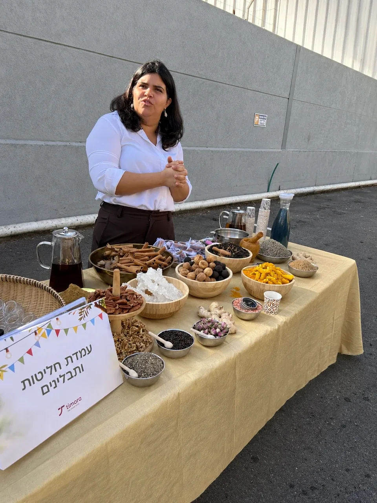
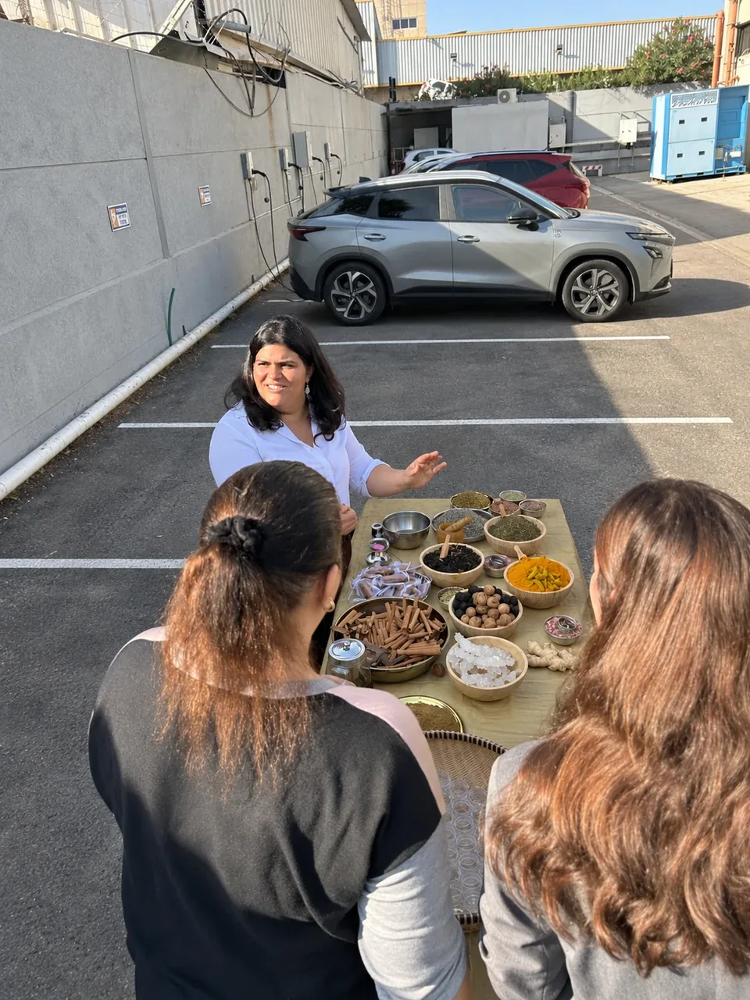
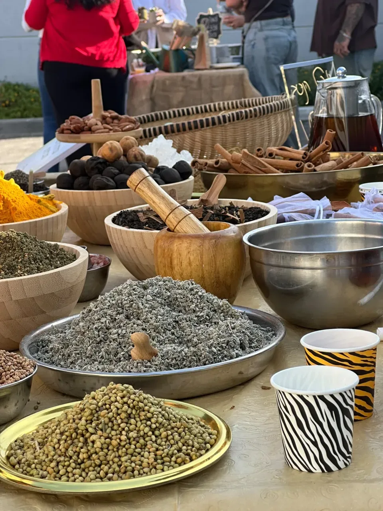
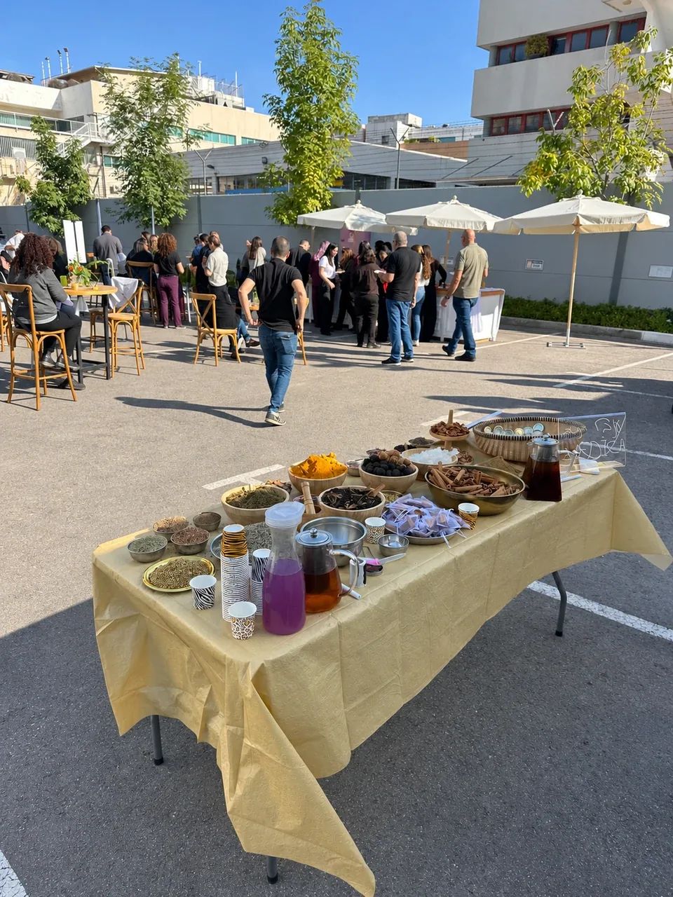
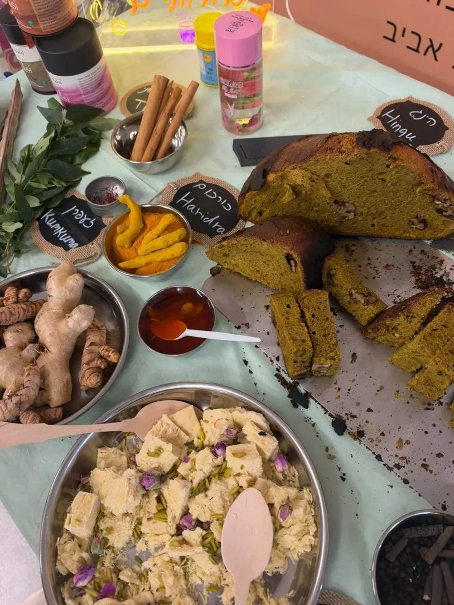
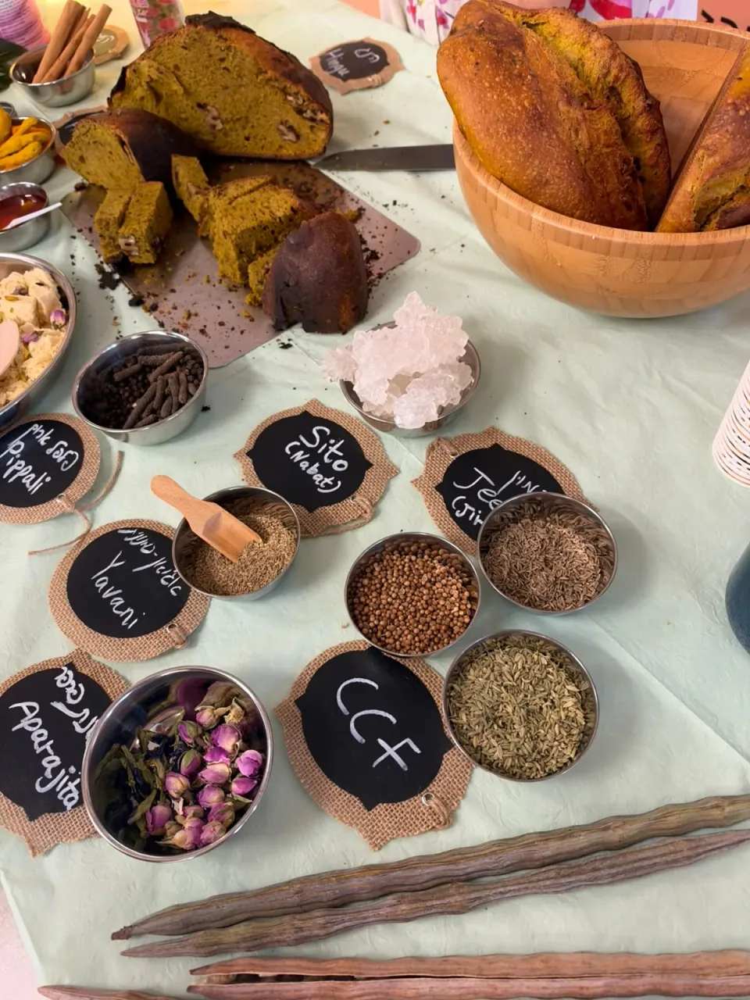
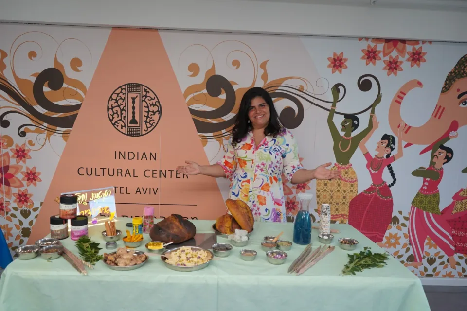
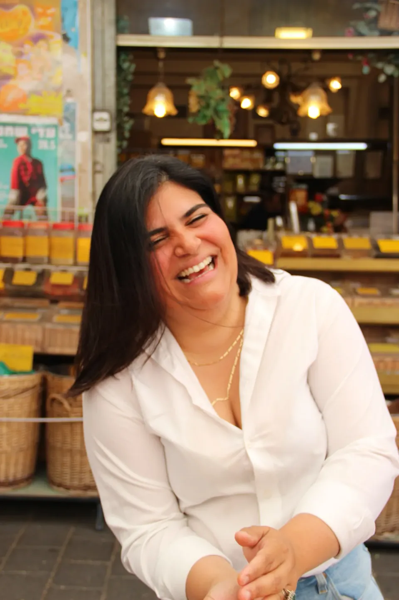

Taste herbal infusions, get to know spices and explore wellbeing and Ayurveda in everyday language.
Event producers • Company wellness days • Tel Aviv
Silk Road-inspired
longevity stands
A journey through herbal infusions, spices and tastings inspired by the Silk Road, drawing on Inbal Hanasab’s experience as an Ayurveda and Persian medicine practitioner. An open stand for company activity days, wellness events and conferences.

For event production companies
A tasting and conversation stand for your next event
Producing a company activity day, conference or wellness event? Bring a Silk Road-inspired longevity stand into your production: tastings and stories from Indian and Persian traditions, guided by Inbal’s experience in Ayurveda and Persian medicine. We coordinate content, timing and venue requirements with your production team.
Book a stand on its own or discuss a talk or group workshop alongside it. The number of stands, activity hours, equipment and price are agreed in the proposal according to the event’s scope.
What should your brief include?
- Production company and client organization
- Event type, date and location
- Estimated attendance and requested activity hours
- Language, available space and special requirements
We agree on setup and pack-down time, a suitable table, and access to hot water or electricity as needed before the event.
The Silk Road, Ayurveda & Persian traditions
The Silk Road in your cup, on your plate and in conversation
Here, longevity is a theme for exploring everyday quality of life: food, rest and routines through an Ayurvedic lens. This is an educational tasting experience, with no medical tests, diagnosis or promises of a longer life.
The Silk Road inspires a meeting of herbal infusions, spices and food traditions from India and Persia. Inbal brings her experience as an Ayurveda and Persian medicine practitioner together with her Persian-Iranian family heritage through tastings, aromas and stories. Guests explore how these ideas connect to everyday cooking, tea breaks and routines.
Start with a cup of herbal tea
Begin with the aroma and flavour of the infusions. Get to know the ingredients and find out what goes into each blend.
What’s in the cup and on the table?
Inspired by the Silk Road, cinnamon, roses and familiar spices open a conversation about Indian and Persian food traditions and their place in today’s kitchens.
Small ideas for everyday life
How do you prepare an infusion or use a familiar spice in a meal? Leave with simple ideas for your kitchen and your tea break at work.
- About two hours of drop-in activity
- Employees join at their own pace. Setup and pack-down time are arranged separately.
- An employee experience, with no sales
- The activity includes tastings and explanations only. Scope and pricing are agreed with your organization in advance.
From our events • Timora
An herbal infusion and spice stand at a Timora event
Tastings and conversation with Inbal at an event for Timora, a real estate fund. Guests stopped by the table, explored the ingredients, tasted infusions and asked questions: an open experience connecting people, flavours and stories.



From the stand at a Timora event. Tastings and the scope of your event’s activity will be agreed in advance.
A taste of our stand at the Indian Embassy
Herbal infusions, spices, tastings and conversations about Ayurveda, photographed at an event where we hosted a stand at the Indian Embassy.



These photos show a past event. The tastings and infusions for your event will be agreed in advance.
A stand, a talk or a workshop for your team?
Choose one activity or arrange a combination to suit your event and the time available.
Ayurveda tasting stand
About two hours of tastings and short conversations at an open stand. A good fit for wellness days when employees join at different times.
Explore the tasting standCorporate wellness talk
A 45–60 minute group session on nutrition, sleep, stress and habits during the working day. Available in English or Hebrew, with time for questions by arrangement.
See possible talk topicsAn infusion and tasting workshop
A group session exploring spices, aromas and flavours, with practical ideas for daily life. The workshop’s length and content are tailored to the group.
Ask about a group workshopPlanning an activity outside the office? You can also arrange a Levinsky Market tour with Inbal, or ask about a session at HaPa’amon in Tel Aviv, depending on availability and your group.

Inbal’s professional experience meets the Silk Road
Inbal: Ayurveda, Persian medicine and a personal story
Inbal Hanasab is the founder of VEDICA, an Ayurveda and Persian medicine practitioner, and a graduate of PranaVeda. She brings her experience working with people, nutrition and daily routines to the stand, alongside her Persian-Iranian family heritage and love of herbs and spices.
As on her Levinsky Market tours, the Silk Road connects India, Persia and the home kitchen. Starting with something guests can taste and smell, Inbal opens an approachable conversation about traditions, routines and ideas to take home, with room for questions and personal connection.
Read about Inbal and her path to AyurvedaPossible topics for a wellness talk
For teams who would like a shared group session, alongside the stand or as a separate activity.
Sleep and stress at work
A conversation about daily routines, workload, coffee, meals and evening habits, and how they relate to rest and the working day.
Everyday nutrition and spices
An introduction to spices, herbal infusions and simple habits to bring into your kitchen and office breaks.
An approachable introduction to Ayurveda
Explore Ayurveda, the seasons and daily routines through everyday examples and questions from the group.
Let’s plan the details together
Send your organization’s name, location in Tel Aviv, preferred date and estimated number of employees. We will then agree on the format, tasting quantities and price.
Fit the flow of your event
We will discuss when employees can drop by, where the stand fits best and how many people are likely to take part during the activity.
Agree on equipment and setup
We will agree on space, a table, hot water or electricity as needed, and setup and pack-down time outside the activity hours.
Plan the tastings
Infusion blends, ingredients and dietary needs are discussed in advance, including ingredient and allergen information.
Frequently asked questions
How do the Silk Road and Inbal’s experience shape the stand?
The stand brings together infusions, spices and food stories inspired by the Silk Road with Inbal’s experience as an Ayurveda and Persian medicine practitioner and her Persian-Iranian heritage. Tastings and conversation introduce Indian and Persian traditions and ideas for everyday routines.
What does longevity mean in this activity?
It is a theme for exploring everyday quality of life through herbal infusions, spices, food and routines from an Ayurvedic perspective. The activity does not include medical tests, diagnosis or promises of a longer life.
Can event production companies book a stand for a client event?
Yes. Production companies can include a VEDICA stand in a client activity day, wellness day or conference. Send your production company, event type, date, location, estimated attendance and requested activity hours. The number of stands, content, equipment, setup, pack-down and price are agreed in the proposal.
What does the Ayurveda tasting stand include?
An open stand for about two hours, with herbal infusion tastings, introductions to spices and short conversations about Ayurveda and everyday habits. Employees join at their own pace. The activity includes tastings and explanations only, with no product sales.
Where does the activity take place?
The stand is currently offered mainly to companies and organizations in Tel Aviv. We come to your workplace or event venue by prior arrangement.
How many employees can take part, and what does it cost?
Group size, how employees join the stand and pricing are agreed with your organization based on the event’s scope, location and format. To request a quote, send a date, location and estimated number of employees.
What needs to be prepared at the venue?
Before the event, we agree on space for the stand, a suitable table, access to hot water or electricity as needed, and time for setup and pack-down. The two hours refer to the activity with employees; equipment and setup details are agreed in advance.
Do employees need to know anything about Ayurveda?
No prior knowledge is needed. We start with tastes and aromas, explain things in everyday language and share simple ideas for using herbal infusions and spices in daily life.
Can we also book a talk or workshop?
Yes. You can book a 45–60 minute wellness talk or a tasting workshop alongside the stand. Sessions are available in English or Hebrew; combined formats and total duration are agreed separately.
Bring a wellness stand to your event
Producing a conference, activity day or company wellness event? Share your event date, location and estimated attendance. We will coordinate the stand and proposal with your production company or organization.